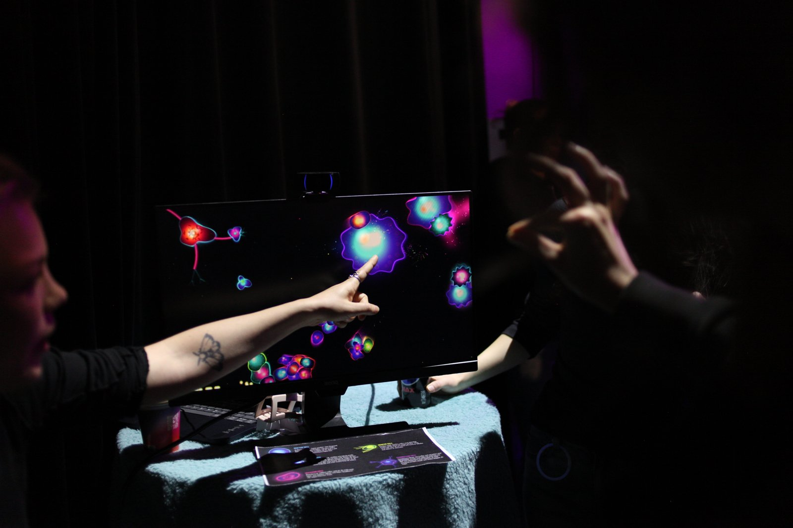
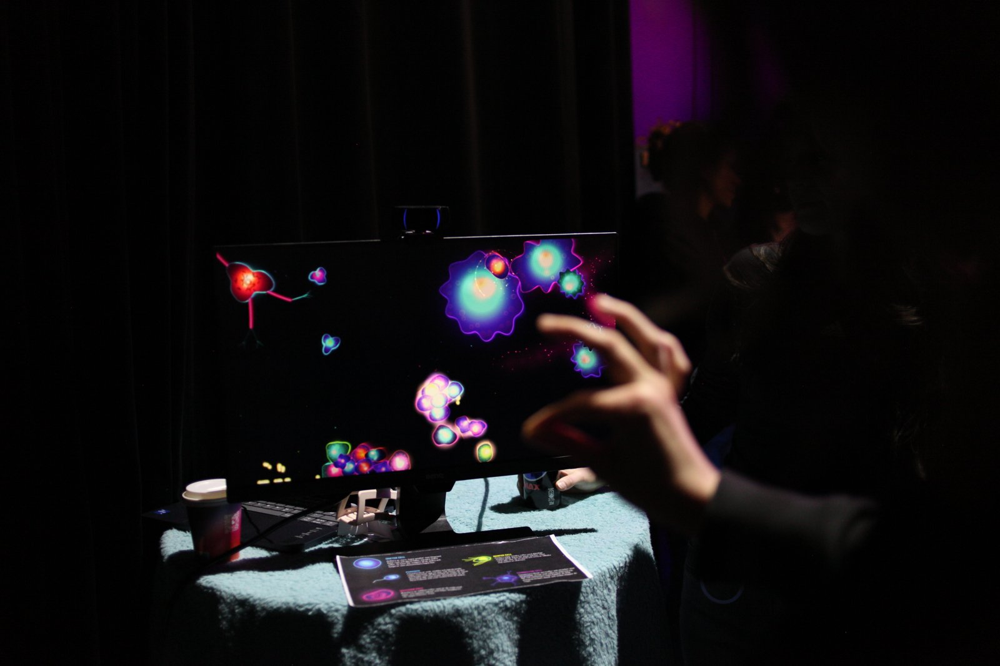
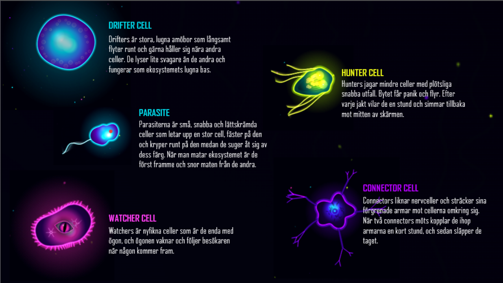

Vårt projekt
Vi är Kajsa Lilja och Tuva Naring, IT, Medier och Design studenter på Södertörns högskola. Digital Biomass är vårt projekt för delkursen Kreativ Programmering. Digital Biomass är ett interaktivt digitalt konstverk som utforskar gränslandet mellan det digitala och det biologiska. När artificiell intelligens utvecklas så snabbt blir frågan om vad som är levande allt mer intressant. Verket gestaltar något som inte kan finnas: en digital, organisk och levande organism. På skärmen lever ett ekosystem av lysande celler som skapas med generativ kod, så ingen är den andra lik. Besökaren påverkar cellerna med händerna via en webbkamera. Ett svep med handen delar dem, ett nyp smälter ihop dem, en öppen hand skrämmer bort dem och en knuten näve matar dem.
Bilder & videos från projektet och Algorave utställningen


